版本 1.0.0 · 基础规范中文译文。文前有一节基本概念。图沿用原文插图，图下说明根据原图和正文整理。
这一章不属于规范原文，是给非专业读者的阅读准备。后面的译文尽量忠于原文，术语不再逐个展开。先把下面这些词和后面的图对上，正文会容易很多。
训练或运行一个大模型时，一颗芯片的算力和内存往往不够，需要很多颗一起干活。它们要不断把各自算出来的数据交给别人。SUE 规定的就是这些芯片之间的一条“专用搬运通道”：通道跑在大家已经会用的以太网上，目标是又宽又快，主要用在同一个机柜里。
可以把它想成芯片之间的内部道路，而不是你上网用的那条路。路上跑的不是网页，而是“请从那块内存读一个数”“请把这个数写进那块内存”这样的动作。
纵向扩展（scale-up）是给同一台机器、同一个机柜加更多芯片，让它们近得像一块更大的芯片。距离短，通常只有几米到十几米，中间最多经过一台交换机。SUE 做的是这件事。
横向扩展（scale-out）是把很多台机器连成一个数据中心。距离远、机器多、路径复杂，用的是另一类网络技术，例如文中提到的 RoCE。规范反复解释为什么那些为大网络设计的复杂办法，不必原样搬到机柜内部。
带宽是路有多宽，单位时间能过多少数据。800 Gbps 大约是每秒 100 GB。1.6 Tbps 是这个数的两倍。规范里的“每个 SUE 实例 800 Gbps”是说一小块搬运电路就有这么宽；一颗芯片上可以放 8 个、12 个这样的电路，总宽度再乘上去。
时延是一趟要多久。往返时延（RTT）是“发出去，再收到对方的回应”的总时间。规范的目标是小于 2 微秒，也就是百万分之 2 秒。单向时延是只算去程。图 22 把这一趟拆成芯片内部的桥、线缆和交换机，每一段都是几十到几百纳秒（1 微秒 = 1000 纳秒）。
路宽和路程是两回事。路可以很宽，但若每一趟都要等很久，大量小块数据仍然搬不快。所以这篇规范对时延和带宽同时提要求。
加载（load）是从某处内存读数据，存储（store）是往某处内存写数据。原子操作是“读出来、改一下、写回去”合成一步，避免两颗芯片同时改同一个数时互相踩踏。put 可以理解为写给对方，get 可以理解为向对方要数据。
单边操作的意思是：对方芯片上的程序不用被叫醒来配合。源芯片直接对目的芯片的内存硬件下命令。确认只表示“对方的搬运电路已经收到”，并不表示“数已经放进内存”。这和寄信不同：寄信要对方拆信；单边操作更像把文件放进对方的文件柜，柜子的锁和登记由硬件完成。
共享内存是让很多颗芯片看起来在使用一块连在一起的地址空间。PGAS 是这种看法的一种编程模型。谁有权访问哪一段地址，由芯片在 SUE 之外自己管。SUE 只提供一个叫“分区”的字段，用来帮助做隔离。
网络不把内存里的数连续不断地倒过去，而是分成一包一包。每一包像一个包裹：
交换机只看快递单，把包裹转到下一条线，不打开看里面的命令。一跳就是经过一台交换机。规范预期的主要接法是单跳：两颗芯片之间只经过一台交换机。网状直连则是两颗芯片用线缆直接对接，中间没有交换机，对应图 2。
平面可以想成并排的好几套独立道路。图 1 里 12 台交换机就是 12 个平面：每颗芯片在每个平面上各有一个出入口。任意两颗芯片之间可以同时走 12 条路。一条路堵住或断了，其他平面还在。
以太网是数据中心里已经大量使用的有线网络标准。交换机、光模块、铜缆、网管软件都有现成产品。SUE 选择骑在它上面，是为了少发明一套新的插头和交换机。
几个容易混在一起的词：
图 3 把搬运分成几层，上层不用知道下层的细节：
线缆上会有噪声，包裹可能损坏。规范用好几道手续，从快到慢：
接收端的货架满了，就不能再往里塞，否则会把还没处理的包默默扔掉。流控就是接收端告诉发送端“先停一下”。
单条内存事务不大，规范里的例子是 256 字节。每个以太网包裹都要带包头。若每条事务单独打一包，包头所占的比例会很高。打包就是把已经到齐、且去往同一目的地的几条事务放进同一个包裹。
规范同时规定：不许为了凑满一个大包而故意等待。队列里只有一条，就立刻发。这样小命令的时延不会为了提高装满率而被拖长。图 21 画的就是这件事。
负载均衡是不要把所有货都堆到同一条路上。芯片上有多块 SUE 时，先在这些块之间分；一块 SUE 自己有多个端口时，还可以在端口之间再分。端口之间分货会打乱顺序，所以只有在允许“不按原顺序到达”时才这样做。
规范提供两种交接方式，芯片厂商选一种即可。
另外还有一条很窄的管理接口，用来读状态、改配置，偶尔也发少量管理包。它不承担那 800 Gbps 的内存数据。
| 词 | 在这篇规范里可以先理解成 |
|---|---|
| XPU | GPU 或任何机器学习加速芯片 |
| SUE 实例 | 芯片上的一小块搬运电路，自带以太网出口 |
| 纵向扩展 | 同一个机柜里把很多芯片连成一块更大的计算体 |
| 带宽 / 时延 | 路有多宽 / 一趟要多久 |
| 加载、存储、原子操作 | 读内存、写内存、读改写合成一步 |
| 单边 | 对方的程序不用参与，硬件直接对内存下命令 |
| PDU / 帧 / 包 | 一次发出去的一个包裹 |
| VC 虚拟通道 | 同一根线上分开的几条队列，避免不同货物互相挡路 |
| SerDes / 车道 | 一根高速串行线，多根并起来组成一个端口 |
| FEC / LLR | 先尽量把小错误改对；改不对就由这根线缆的两端立刻重发 |
| ACK / NACK / Go-Back-N | 收到了 / 缺号了请重发 / 从缺的那号起整段重发 |
| PFC / 信用 | 按类别暂停 / 有空位代币才允许发送 |
| SUE Lite | 去掉端到端重发和拥塞控制、把电路面积大约减半的精简档 |
| 日期 | 版本 | 作者 | 说明 |
|---|---|---|---|
| 2025-05-16 | 0.5.0 | Broadcom | 首次发布 |
| 2025-07-16 | 0.5.3 | Broadcom | 第二次发布，加入 SUE Lite，并做勘误 |
| 2025-08-05 | 0.5.5 | Broadcom | 按指导委员会审阅意见修订表述 |
| 2025-08-21 | 0.5.7 | Broadcom | 增加 AMBA AXI |
| 2025-09-05 | 1.0.0 | Broadcom | OCP 正式发布 |
本规范的默认贡献者许可协议已更新为 OWFa 0.9。贡献方在使用前应确认实际签署的是正确的 CLA / FSA。
对本规范的贡献，依据 2024 年 10 月 16 日版本的《修改版 Open Web Foundation Agreement 0.9》（OWFa 0.9，下称“贡献许可”）作出。本文件的贡献方是 Broadcom Corporation。
使用本规范，受同日版本的《修改版 OWFa 0.9 最终规范协议》（FSA，下称“规范许可”）约束。相关许可文本见 OCP 网站的贡献与协议模板页面；已签署的协议副本需直接向 OCP 索取。
上述许可不适用于附录。附录仅供参考，没有规范约束力。
尽管有前述许可，本规范由 OCP 按“原样”提供。OCP 明确否认任何明示、默示或其他保证，包括适销性、不侵权、特定目的适用性以及权属。实现或遵从本规范可能涉及未签署上述许可的第三方权利；OCP 不负责指出实现本规范还需要哪些许可。实现或使用本规范的全部风险由使用者承担。对因使用本规范引起的任何索赔，OCP 不承担金钱赔偿责任，包括利润损失以及任何后果性、附带性、间接性、特殊性或惩罚性损害，无论诉因是违约、侵权（含过失）还是其他，即使 OCP 已被告知可能发生此类损害。
原文这一节是模板占位：要求列出提供过反馈、但没有贡献知识产权的公司或个人。1.0.0 文本中没有填入具体名单。
规范把构建高度可扩展、面向加载/存储和单边内存事务的 XPU 到 XPU 以太网传输交给社区，以此符合开放性。
它提供面积和功耗都经过优化的 XPU 间传输，一颗 XPU 封装里可以集成多个实例，并且直接跑在以太网上，从而沿用已有的以太网生态。
XPU 厂商可以借用以太网已经广泛部署的软件、管理、线缆和连接器。互连的部署和认证不必从零开始。
实现在功耗、面积和工程复杂度上足够省，才能在一颗 XPU 里放进多个实例，凑出每秒数 Tb 的带宽。
互连建立在已经多厂商化的以太网交换机和生态之上，是在复用现有技术，而不是再造一套封闭链路。
本规范描述 XPU 之间、用于加载/存储以及单边内存操作的以太网传输。
本规范定义上述传输。它是一份基础规范（Base Specification），不是某一款芯片或整机的产品规范。
机器学习和推理一类负载越来越复杂，对并行处理能力的需求明显上升。要把 GPU，或者更一般地说 XPU（各类定制机器学习加速器都算在内），扩展到机柜级甚至跨机柜，才能处理更大的数据集、训练更深的网络、同时跑更多任务，并缩短执行时间、提高系统效率。
用来做这种互连，以太网有现成优势：业界领先的高速链路和大容量交换机、成熟的生态，以及大家都熟悉的运维方法。已有多个行业组织在做面向人工智能的网络，有的扩展以太网，有的拿以太网的某些部件当积木。SUE 要提供的是基于以太网的 XPU 纵向扩展框架，意图是用传输层和以太网数据链路，把内存事务从一颗 XPU 搬到另一颗 XPU。
SUE 负责多 XPU 系统里 XPU 之间的通信。每个 SUE 实例的网络侧可以配成 1 个、2 个或 4 个端口。例如一个 800G 实例可以是 1×800G、2×400G 或 4×200G。端口怎么切，取决于交换机基数（radix）、SerDes 数量，以及冗余和故障切换。
预期的主要组网是单跳交换：两颗 XPU 之间只经过一台交换机。一颗 XPU 上可以放多个 SUE 实例，例如 8 个或 16 个。图 1 的例子是 64 颗 XPU，每颗 12 个 800G SUE 实例，下面接 12 台 64 端口以太网交换机。在这种全交换连接下，任意两颗 XPU 之间最多有 9.6 Tbps（12×800G）带宽。
另一种用法是网状直连，一对 XPU 之间不经过交换机，见图 2。
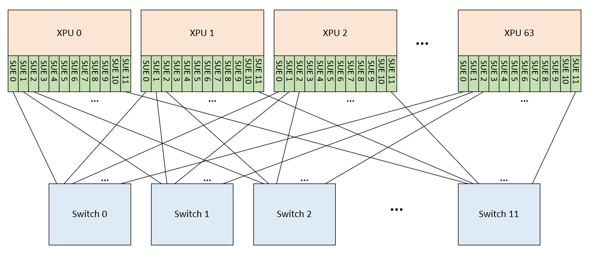
图 1 单跳交换部署示例（原文 Figure 1）
上排是 XPU 0、XPU 1、XPU 2，省略号之后到 XPU 63，一共 64 颗。每颗 XPU 下面挂着一排绿色的 SUE 0 到 SUE 11，共 12 个实例。下排是 Switch 0 到 Switch 11，共 12 台交换机。连线是按“平面”对齐的：所有 XPU 的 SUE k 都接到 Switch k。所以这不是一台交换机把 64 颗 XPU 全连上，而是 12 个互相独立的平面，每个平面是一台 64 端口交换机。
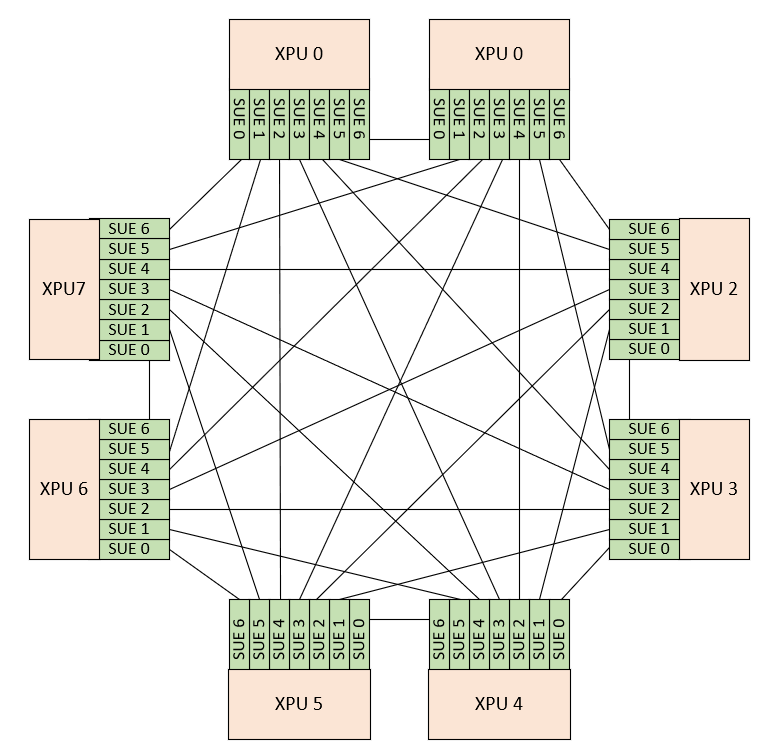
图 2 网状部署示例（原文 Figure 2）
八颗 XPU 围成一圈，每颗下面有 SUE 0 到 SUE 6 共七个实例。每条线都是两颗 XPU 的 SUE 端口直接对接，图中没有交换机。8 个节点的全互连需要每节点 7 条链路，和每颗 XPU 上的 7 个 SUE 一一对应。
SUE 搬运的是通用的命令/响应事务。操作集合和命令结构由 XPU 自己定义，对 SUE 透明。这条命令通道可以用来实现 put、get 和原子操作。缓存一致性之类的服务可以另行定义，完整实现不在 SUE 范围内。
SUE 把所有事务都看成命令。XPU 若要做命令/响应，就自己定义操作码（例如读和读响应），并把它们映射到不同的流量类别。
XPU 的片上网络（NOC）把命令交给 SUE。SUE 向上提供两种数据接口：一种是类似 AMBA AXI 的信号双工接口，另一种是 AMBA AXI4。接口上既有控制也有数据。控制内容大体不透明，其中包含命令、远端 XPU 标识，以及“有没有数据、数据有多长”。
映射与打包层按目的地组织命令，并伺机把多条命令打进同一个 SUE 协议数据单元（PDU）。每个 PDU 只去往一颗 XPU、只属于一个流量类别。控制信息里的虚拟通道（VC）用来把包映射到对应的流量类别。
排序有两种。严格排序时，同一条 VC 上、从同一源到同一目的地的事务，按原顺序交给目的 XPU。配置成多端口时，可以打开无序模式：事务在端口之间做负载均衡，不再保持顺序。
每个 SUE PDU 对应一个以太网帧。可靠性、数据完整性和加密都按包来做。网络层根据目的 XPU 构造包头，可以是标准以太网头，也可以是 6.3.5.1 节的压缩格式。链路层重传（LLR）加上优先级流控（PFC）或基于信用的流控（CBFC），用来提供无损服务。若仍然发生不可恢复的错误，上面的 SUE 传输层再做端到端重传。到达目的地后，PDU 被拆开，每条命令交回 XPU。
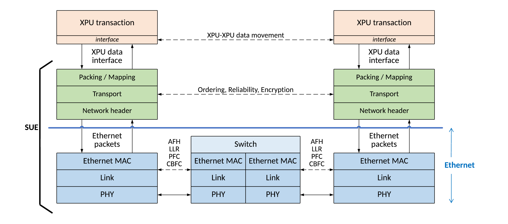
图 3 SUE 协议栈（原文 Figure 3）
左右对称，各是一颗 XPU。最上是橙色的“XPU 事务”，中间虚线写着 XPU 之间的数据搬移，表示事务的语义在两端 XPU 上，不在网络里解释。往下进入绿色的 SUE，再往下是蓝色的以太网，中间可以有一台交换机。
SUE 的设计哲学是：在低时延、高带宽的同时，让实现足够省面积、省功耗，从而能在一颗 XPU 里例化很多份。下面这些需求用来指导设计，并不是不可更改的硬性条款，具体产品可以按场景裁剪。
| 需求 | 指标 | 备注 |
|---|---|---|
| XPU 数量 | 最多 1024 | 单跳、低时延 |
| 事务类型 | 单边操作；内存加载、存储、原子；偏小的传输 | 单边是指目的端进程不感知这次操作。操作仍会被确认，使源端知道它已经到达目的端 |
| 内存架构 | 共享内存 | 例如 PGAS。内存注册不在 SUE 范围内 |
| 端到端时延 | 往返小于 2 μs | RTT |
| 线缆长度 | SUE 到交换机最长约 10 m | 为时延服务 |
| 每实例带宽 | 800 Gbps | 可扩展到 1.6 Tbps |
| SerDes | 200 Gbps | 同时支持 100G 和 50G |
| 端口配置 | 1、2 或 4 个口 | 用来提高交换机基数，并支持冗余和故障切换 |
| 虚拟通道 | 最多 4 条 | 用 QoS 字段选择独立流量类别，避免死锁 |
| 以太网符合性 | 支持标准以太网 | 可选压缩包头、LLR、CBFC |
SUE 不是一块带全套现代网卡服务的通用网络接口，也不定义让不同 XPU 互相操作的 XPU 级协议。
XPU 内部并行度很高，纵向扩展传输必须能让 XPU 在很多个平面上同时连通。拓扑又比较受约束，所以为了面积和功耗，传输本身要相对简单。它需要做的是：经过单跳交换机，把上层数据从源 XPU 可靠地交到目的 XPU。
纵向扩展拓扑可以和横向扩展一样，既是多平面也是多轨。要把这种网络的传输做高效，关键是把数据分到各个平面上，并且处理好多打一（incast），不要在网络里造成队头阻塞。
横向扩展今天的做法，是让传输层显式支持多路径。集合通信库（例如 NCCL 跑 RoCEv2）靠成倍增加队列对（QP）来做；Ultra Ethernet Transport 这类协议则原生支持逐包喷洒。面对 incast，RoCEv2 使用 PFC，但下一代传输正在弃用它，因为 PFC 会带来队头阻塞。替代办法是报文裁剪：网络不要静默丢包，而是把被丢包的包头优先送到目的端。
这套办法搬到纵向扩展上不划算，因为两边的约束不一样：纵向扩展要的带宽高得多、往返时延低得多、规模也小得多。
更简单的做法是：每个平面一条路径，并依赖无损转发。丢包很少，恢复用回退 N（Go-Back-N）就够，传输状态小，收发处理也简单。为了进一步减少误码造成的丢包，有 LLR 就打开它。LLR 是交换机功能：接收端 FCS 校验失败时，由相邻设备重传这一帧，而不是立刻推给端点。
要让 Go-Back-N 效率高，XPU 之间必须配成无损，用 PFC 或较新的 CBFC。同时端点上要用当前这一代的拥塞控制，尽量不要触发流控，否则仍会队头阻塞。
一颗 XPU 有多块网络接口时，跨接口的负载均衡由 SUE 外面的模块做，例如 XPU 自己。单个 SUE 实例如果有多个端口，只有在无序模式下，才能在自己的端口/平面之间做均衡。也就是说，把流量铺到所有纵向扩展接口的所有平面上，是 SUE 之上的负载均衡层的事。
因为性能要接近最优，每个平面上的传输必须能从线速启动。单层网络里唯一还会出现的性能问题是 incast：多个发送方同时朝同一个接收方打满。
SUE Lite 用来把 SUE IP 的规模最多缩小约 50%。它去掉 SUE 可靠传输层，改由 LLR 提供节点之间的可靠性。可靠传输层去掉之后，拥塞控制也一并去掉。打包长度限制为 1 KB，对 XPU 只保留信号接口。以太网端口（MAC / 链路 / PHY）的规模不变。协议栈见图 4，与完整 SUE 的差别见表 2。
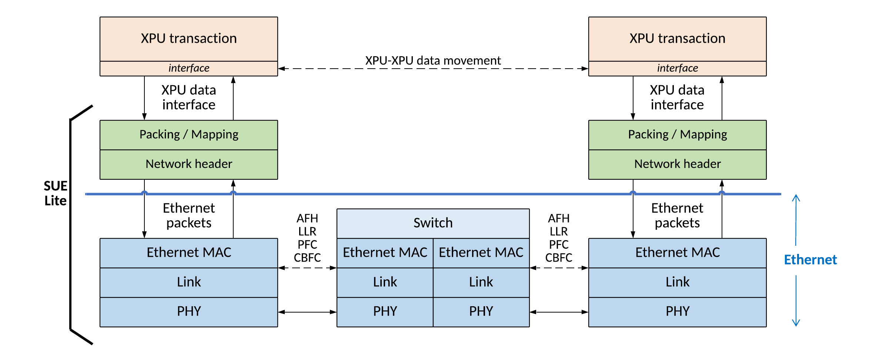
图 4 SUE Lite 协议栈（原文 Figure 4）
布局与图 3 相同，差别很具体：绿色区域里没有“传输”层，只剩下“打包 / 映射”和“网络头”。左右 XPU 事务之间的虚线还在，表示数据搬移的语义不变；但图 3 里那条标着“顺序、可靠性、加密”的传输层虚线没有了。
| 属性 | SUE | SUE Lite |
|---|---|---|
| 事务类型 | 写（完整/部分、带应答/不带应答）、读、消息、屏障。两档相同 | |
| 事务大小 | 256 B。两档相同。这是单条事务的大小，不是 PDU 打包上限 | |
| DMA 就绪接口 | 有（块写）。两档相同 | |
| 事务打包 | 有。两档相同。Lite 的打包上限另定为 1 KB，完整 SUE 可达 4 KB | |
| LLR、CBFC、AFH 头 | 有。两档相同 | |
| 核侧接口 | AXI4，以及基于信号的接口 | 只有基于信号的接口 |
| 端到端可靠性 | 有（可靠传输层） | 无，只有逐跳 LLR |
| 拥塞控制 | 有（固定窗口） | 无 |
| 分区 | 有 | 无，改用地址隔离 |
每个 SUE 实例有三类接口，见图 5：XPU 命令接口、XPU 管理接口、以太网接口。
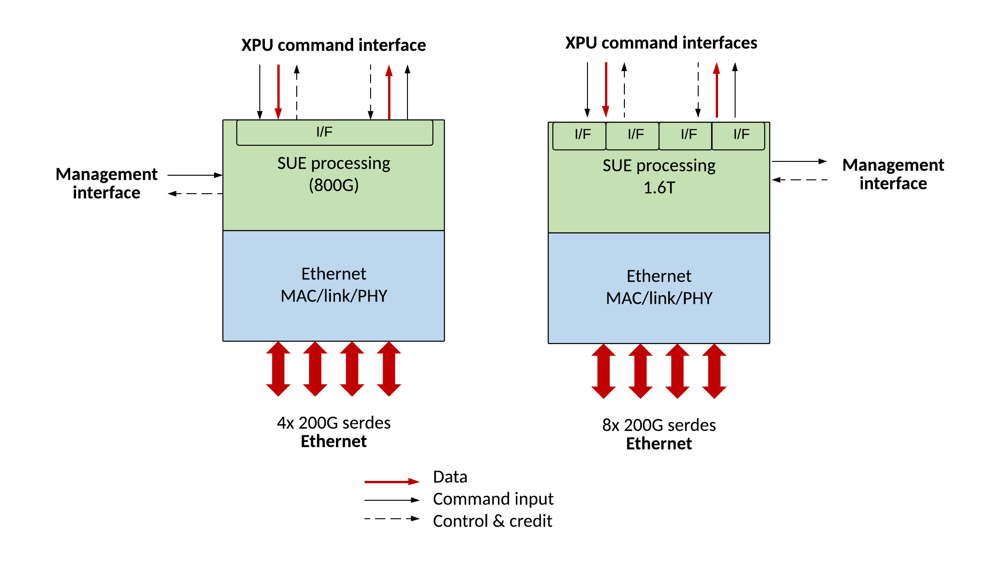
图 5 SUE 接口（原文 Figure 5）
图上是同一套 IP 的两种规模。左边是 800G，右边是 1.6T。每边都分成上绿下蓝：绿色是 SUE 处理逻辑，蓝色是以太网 MAC / 链路 / PHY。图例有三种线：红色实线是数据，黑色实线是命令输入，黑色虚线是控制与信用。
控制面使用 AXI 目标接口，可以访问寄存器。除了配置和状态，这个接口也能收发包：由 XPU 组好完整的包，SUE 只补以太网 FCS。这条通路不可靠，速率最高约每秒 1 万包。
命令接口可以是下面两种之一：使用信用的连线/FIFO 接口，或者 AXI4。选哪一种由 XPU 决定。有的消息映射不进 AXI4，XPU 的 NOC 和 SUE 之间就需要更开放的自定义接口。
这个接口本质上是带信用的 FIFO。XPU 把命令以及可能附带的数据写给 SUE。SUE 按 {目的地, VC} 以及总速率，用信用做流控。发起传输时，XPU 在命令接口上送出表 3 的信号。Input 表示从 XPU 到 SUE。
| 信号 | 方向 | 位宽 | 含义 |
|---|---|---|---|
tx_cycle | 输入 | 4 | 数据节拍编号。一次最多搬 256 B，需要几个节拍取决于数据总线宽度 |
tx_valid | 输入 | 2 | 操作类型：无、仅命令、命令加数据 |
tx_vc | 输入 | 2 | 虚拟通道。2 位对应最多 4 条 VC |
xpuid | 输入 | 10 | 远端 XPU 标识。10 位足以覆盖表 1 的 1024 个端点 |
tx_control | 输入 | 144 | 控制字段，会被打包进发往远端的事务。前几个字节是命令和长度 |
tx_data | 输入 | N | 数据，按总线宽度分拍送出。例如 N = 256 位（32 B）时，8 拍搬完 256 B |
tx_err | 输入 | 1 | 接口上发生不可纠正 ECC 错误。用于裸片到裸片之间要做 ECC 生成和检查的情况 |
tx_credit | 输出 | 6 | 按 VC 给“仅命令”和“命令加数据”返回信用及有效位 |
tx_reset_in | 输入 | 1 | 复位 |
tx_reset_out | 输出 | 1 | 表示 SUE 正处于复位 |
报文到达后，SUE 检查网络头和 SUE PDU，拆包，再经命令接口把事务送回 XPU。反方向信号见表 4，方向相对表 3 反过来：原来的输入变成 SUE 的输出。
| 信号 | 方向 | 位宽 | 含义 |
|---|---|---|---|
rx_cycle | 输出 | 4 | 数据节拍编号，一次最多 256 B |
rx_valid | 输出 | 2 | 无、仅命令，或命令加数据 |
rx_vc | 输出 | 2 | 虚拟通道 |
xpuid | 输出 | 10 | 远端（此处为源）XPU 标识 |
rx_control | 输出 | 144 | 控制字段，前几个字节是命令和长度 |
rx_data | 输出 | N | 数据，分拍送出，规则与 tx_data 相同 |
rx_credit | 输入 | 6 | XPU 向 SUE 返回信用，覆盖仅命令和命令加数据 |
rx_reset_in | 输入 | 1 | 复位 |
rx_reset_out | 输出 | 1 | 表示 SUE 正处于复位 |
SUE 也可以按每个 400G 以太网接口，暴露一组 AXI4 从接口（subordinate）和一组 AXI4 主接口（manager）。每个 AXI 接口有规范定义的 5 条独立通道：AW、W、B、AR、R。每条主通道和从通道都另带一条信用接口，由接收方向发送方还信用，避免把下游缓冲写爆。
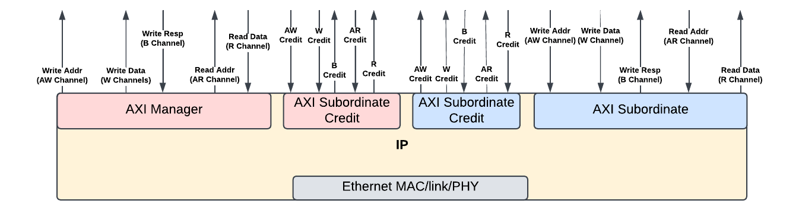
图 6 SUE 数据通路 AXI 接口（原文 Figure 6）
整块 IP 底部是以太网 MAC / 链路 / PHY。上面一排是 AXI 角色，左右方向相反，因为同一块 IP 既要替 SoC 发请求，也要替网络把请求送进 SoC。
图 7 把 SoC 逻辑和 SUE 之间的 AXI 连接、缓冲以及 VC 映射放在一起。AXI 事务分成请求（AR、AW、W）和响应（B、R）。请求映射到 VC0，响应映射到 VC1。
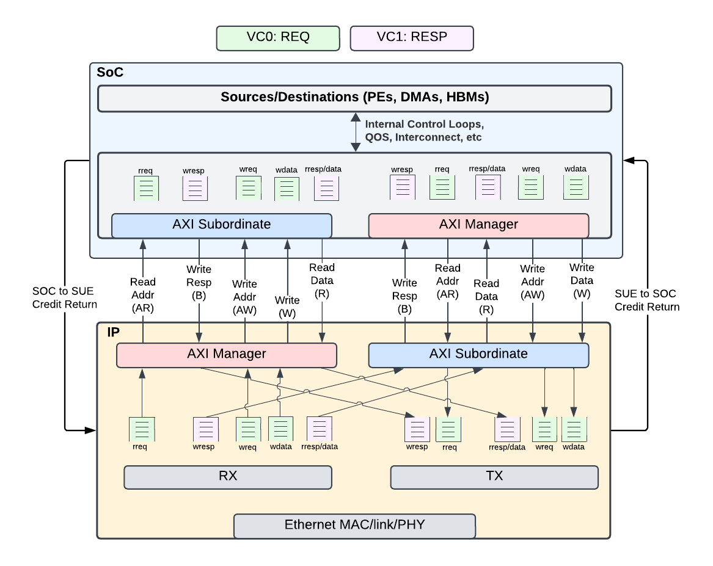
图 7 数据通路 AXI 接口的连接关系（原文 Figure 7）
上半是 SoC，下半是 SUE IP。顶部图例：绿色 VC0 是请求，粉色 VC1 是响应。SoC 最上是源和目的，也就是处理单元、DMA 和 HBM，中间经过片内控制环、QoS 和互连。
xpu_id、类型和长度。除此之外，控制位和数据位对 SUE 基本不透明，打包后原样送到对端。图 8 画的是请求和响应如何在两颗 XPU 之间走。图中是写请求/写响应；读相同，只是改走 AR 和 R。读请求映射到 VC0，读数据映射到 VC1。写响应是 ACK 或 NACK，放在反方向报文的头里。
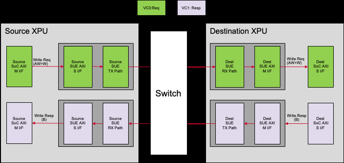
图 8 数据通路 AXI 连接：写与写响应（原文 Figure 8）
中间白色竖条是交换机。左边源 XPU，右边目的 XPU。上排绿色是 VC0 请求，下排粉色是 VC1 响应。箭头都是从左到右再在响应路径上从右回到左。
SUE 把去往同一个 {目的地, VC} 的事务伺机打包，一个 SUE PDU 最大 4096 字节。真正调度发送时，在打包后的 PDU 前面加上可靠性头（RH，图 9），在尾部加上 32 位 CRC（R-CRC）做完整性保护。
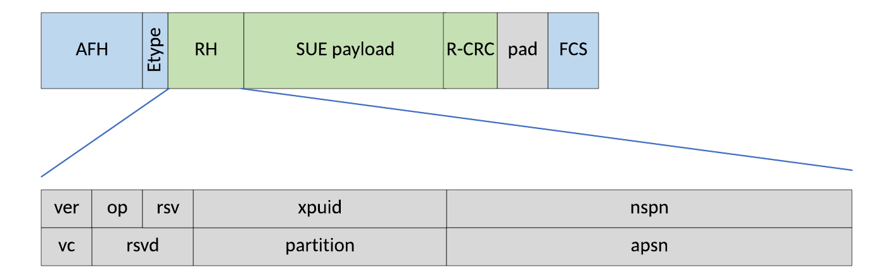
图 9 SUE 可靠性头（原文 Figure 9）
上一行是线上帧的骨架，下一行是把 RH 展开后的两个 32 位字。帧从左到右是：AFH、EtherType、RH、绿色的 SUE 载荷、R-CRC、填充、FCS。蓝线把 RH 拉到下面的字段图。两行字段各 32 位，RH 一共 8 字节。
ver 2 位版本；op 2 位操作码，表示 apsn 是 ACK、NACK 还是无效；rsv 2 位保留；xpuid 10 位；npsn 16 位，这一包自己的分组序号。vc 2 位，映射到流量类别；rsvd 4 位保留；partition 10 位，做多租户隔离；apsn 16 位，被确认或被否定的分组序号。| 字段 | 位宽 | 含义 |
|---|---|---|
ver | 2 | 版本 |
op | 2 | 操作码：apsn 是 ACK、NACK，或无效 |
rsv | 2 | 保留 |
xpuid | 10 | XPU 标识 |
npsn | 16 | 本包分组序号 |
vc | 2 | 虚拟通道，映射到流量类别 |
rsvd | 4 | 保留 |
partition | 10 | 多租户隔离 |
apsn | 16 | ACK 或 NACK 所指向的分组序号 |
SUE Lite 去掉传输层之后，真正要用的只有目的地、源 XPU 地址和 VC，这三项放得进 AFH Gen 2 的 6 字节头。保护载荷的 R-CRC 也去掉，以进一步减少开销。打包仍然按 {目的地, VC} 进行，但 PDU 上限是 1 KB。封装见图 10。
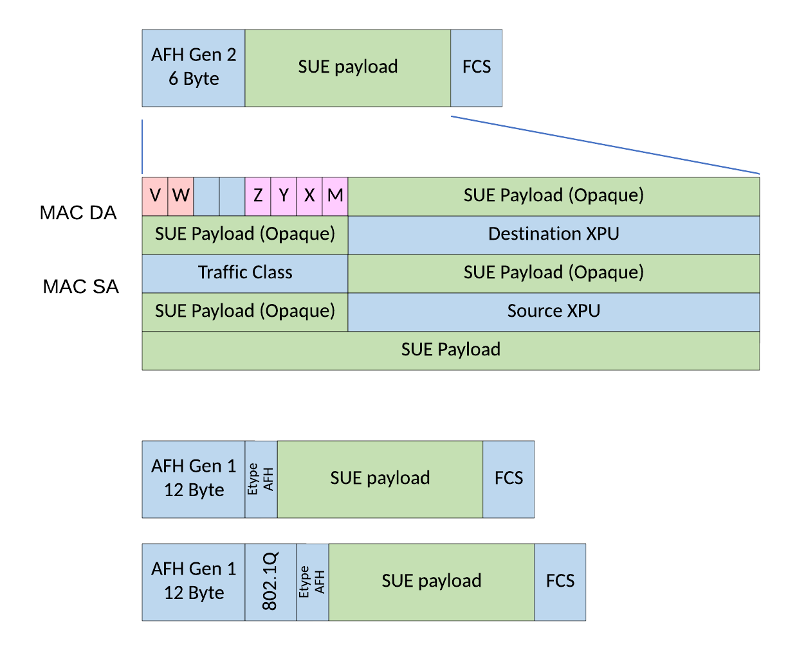
图 10 SUE Lite 封装（原文 Figure 10）
图分三截，表达的是 Lite 不再带 RH 和 R-CRC，转发信息挤进很短的二层头，载荷直接占满其余字节。
SUE 提供标准以太网口，SerDes 速率用 200G 或 100G。表 6 是带一个 800G XPU–SUE 接口的 800G 实例，表 7 是带 4×400G XPU–SUE 接口的 1.6T 实例。
| 以太网口速率 | 每实例端口数 | SerDes 速率 | 每口 SerDes 条数 |
|---|---|---|---|
| 800G | 1 | 200G | 4 |
| 400G | 2 | 200G | 2 |
| 200G | 4 | 200G | 1 |
| 400G | 1 | 100G | 4 |
| 200G | 2 | 100G | 2 |
| 100G | 4 | 100G | 1 |
| 以太网口速率 | 每实例端口数 | SerDes 速率 | 每口 SerDes 条数 |
|---|---|---|---|
| 400G | 4 | 200G | 2 |
| 200G | 8 | 200G | 1 |
| 400G | 2 | 100G | 4 |
| 200G | 4 | 100G | 2 |
| 100G | 8 | 100G | 1 |
SUE 用目的 XPU 标识 xpuid 和 VC 来构造网络头。转发内存事务有三种办法：
使用标准以太网和 IP 头时，用 UDP 端口号识别 SUE 包（图 11）。使用 AFH Gen 1 时，用 EtherType 识别（图 12）。AFH Gen 2 基于 IEEE 802c-2017 的结构化本地地址规划（SLAP），有 12 字节和 6 字节两种。AFH 的目的是减少线上开销。
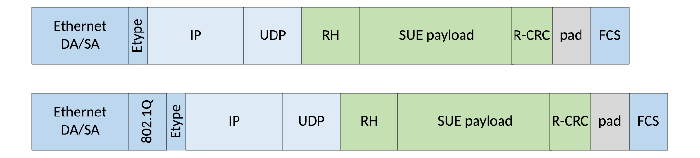
图 11 标准 IEEE 802.3 以太网 / IP 格式（原文 Figure 11）
两条都是“看起来像普通 UDP/IP 包”的 SUE 帧。SUE 自己的内容从绿色的 RH 才开始。
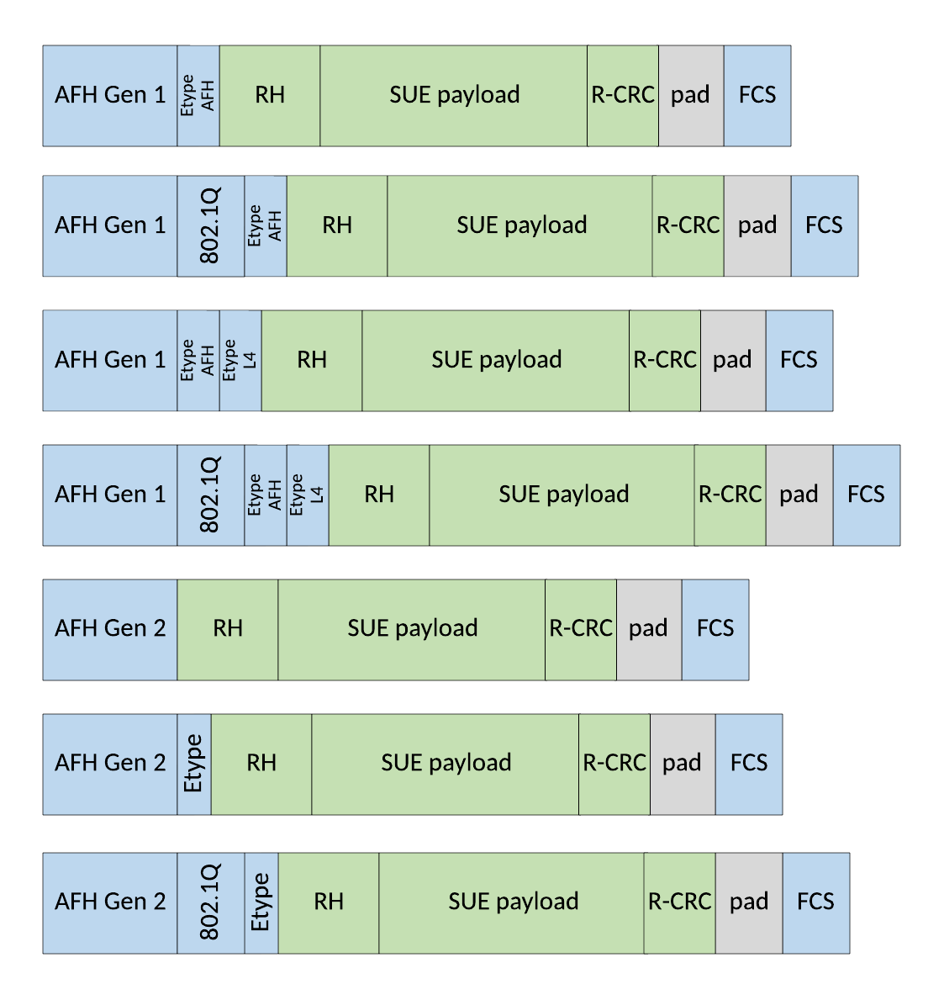
图 12 AFH Gen 1 与 Gen 2（原文 Figure 12）
七条帧都保留 RH、SUE 载荷、R-CRC、填充和 FCS。变化只在 RH 之前的网络头，用来展示“头可以一层层省掉”。
AFH Gen 2 尽量少改现有以太网标准，同时把网络头做得很小。依据 IEEE 802c-2017 的 SLAP，定义 12 字节和 6 字节两种。使用符合 IEEE 编码的管理分配标识（AAI）时，XPU 标识被映射成 32 位或 16 位，填进目的地址和源地址区域。标志位约定如下：
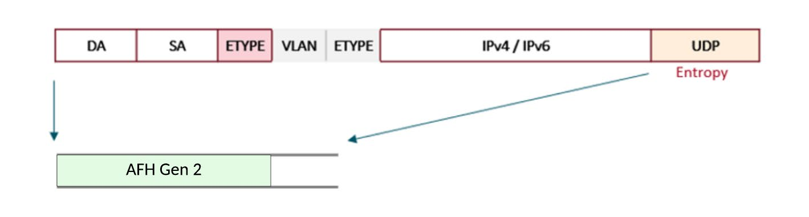
图 13 AFH Gen 2 头压缩（原文 Figure 13）
上条是未压缩的标准头：目的地址 DA、源地址 SA、EtherType、VLAN、又一个 EtherType、IPv4/IPv6，以及标成“熵”的 UDP。下条是压缩结果，一大段收成绿色的 AFH Gen 2，右边只留出很窄的一截。
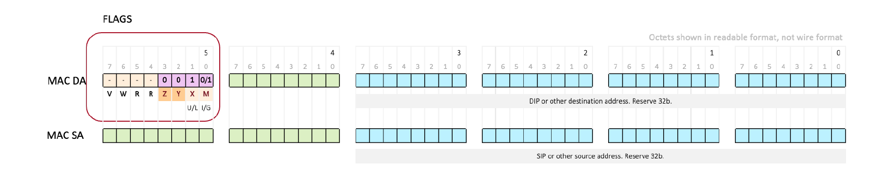
图 14 AFH Gen 2 字段映射（原文 Figure 14）
这是一张按字节展开的 MAC 地址图。图注写明：字节按便于阅读的顺序画出，不是线上的比特序。横轴从字节 5 到字节 0，每字节 8 位，从位 7 到位 0。
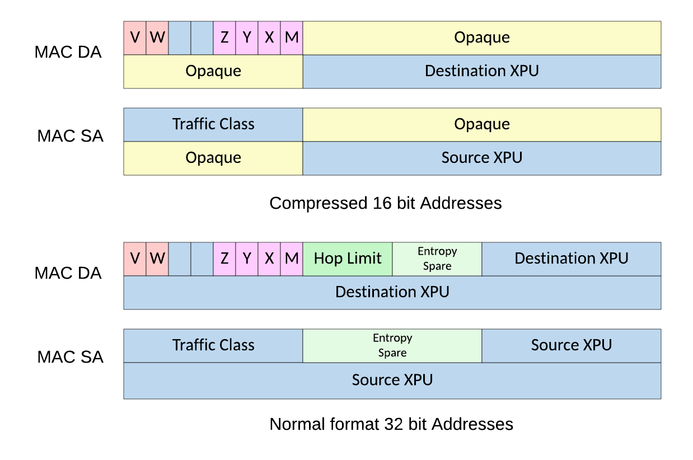
图 15 AFH Gen 2 的正常格式与压缩格式（原文 Figure 15）
上半标注为压缩的 16 位地址，下半标注为正常的 32 位地址。两半都分成 MAC DA 和 MAC SA，各两行，因为 6 字节地址画成两行。
AFH Gen 1 使用标准的以太网目的和源 MAC，但交换机硬件可以只看地址中的 16 到 32 位做转发。XPU 标识映射进目的地址的 16 位供查找。不带 Shim 时，如果要做优先级映射，需要加上 IEEE 802.1Q VLAN 头。无 Shim 的格式见图 16。Gen 1 也可以带一个 Shim，里面有不少和 IP 头类似的字段，见图 17。
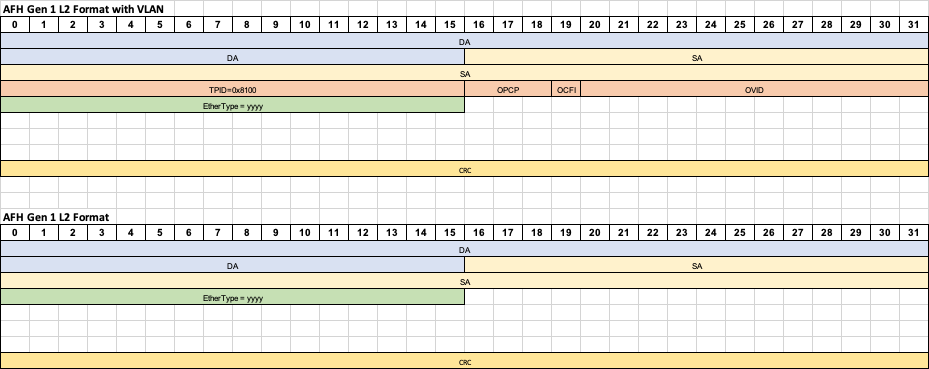
图 16 不带 Shim 头的 AFH Gen 1（原文 Figure 16）
两张都是按 32 位一行画出的二层帧，列号 0 到 31。上面一张带 VLAN，下面一张不带。都没有 Shim，载荷和 CRC 之前只有地址和类型。
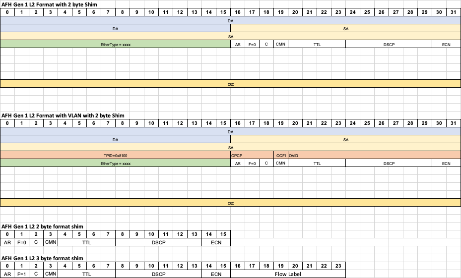
图 17 带 Shim 头的 AFH Gen 1（原文 Figure 17）
这一张在图 16 的地址和 EtherType 之后插入 Shim。原文没有逐字段给出完整语义，下面按图上可见的名字说明。DSCP、ECN、TTL、Flow Label 与 IP 差分服务、显式拥塞通知、生存时间和流标签同名。
FEC 码块越小，时延越低。可以选择 RS-272，而不是标准 IEEE RS-544。RS-272 能纠正的错误更少，换来的是更低的时延。
在 400G 和 800G，IEEE 要求对 FEC 码块做交织。若支持不交织或少交织、让码块跨车道的方式不那么重，时延还可以再降。
LLR 用来在 FEC 之上再提高可靠性。单个包损坏时，由相邻的两台设备重传，而不必等到事务两端去判断这个包是丢了还是坏了。即使开了 FEC，只要 FEC 没能纠正、帧在两台交换机之间因链路错误被丢掉，LLR 仍然可以重传它。
PFC 用来在拥塞时提供无损链路，定义在 IEEE 802.1Qbb。它使用 802.1Q 头里的 802.1p 优先级位，只暂停某一个优先级，而不是像 802.3x Pause 那样暂停整条链路。SUE 至少要使用两个无损 PFC 类别：一个给请求，一个给确认。否则请求会堵住确认，形成死锁。很多 PFC 实现在帧里没有 802.1Q 时，可以用 IP 头的 DSCP 映射到 802.1p。
CBFC 由超级以太网联盟（UEC）标准化，同样用来在拥塞时保持链路无损。相对 PFC，它有三点好处：
不同的 CBFC 类别用来避免 XPU 和交换机之间死锁。VC 映射到 CBFC 类别。
SUE 为挂在它上面的所有以太网口提供链路状态。在两端口或四端口、并且处于无序模式时，若发现某颗远端 XPU 从某一个端口/平面不可达，SUE 把相关工作挪到另一个端口。
SUE 使用共享内存模型。需要地址翻译时，由 SUE 实例之外的 XPU 完成。
SUE 支持加载/存储类服务，也就是 put、get 和原子操作。源 XPU 发出命令，SUE 把命令连同数据交到目的 XPU，并向源 XPU 给出完成指示。
语义是单边的。每条命令由源端单方面发出，不向目的端上的进程发指示。内存注册和保护域一类的管理都在 SUE 之外。SUE 提供的分区字段可以用于访问控制。类似的技术包括 PCIe 和 UALink。单边内存事务的确认表示“接收方已经收到”，不是“数据已经写入内存”。
这和 RoCE、InfiniBand、TCP/IP 的网络语义不同。那些协议要求先和对端 XPU 建立连接。
完整 SUE 的处理流程见图 18，步骤如下。
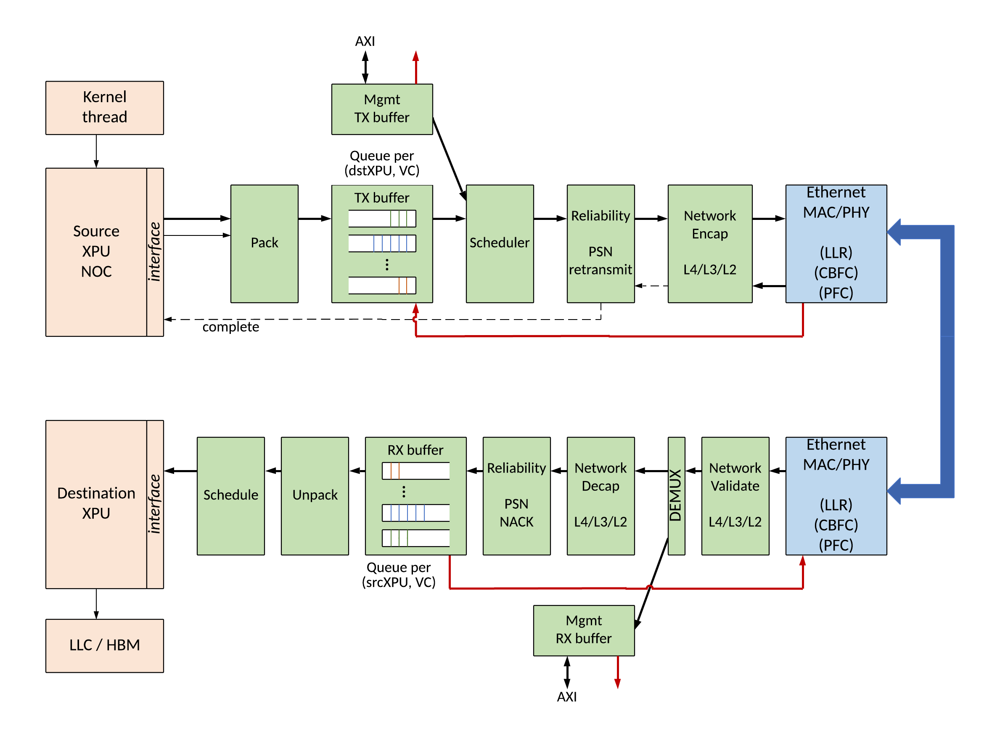
图 18 SUE 处理流程（原文 Figure 18）
上半是发送路径，下半是接收路径，右边两条粗蓝箭头是以太网把帧从源 MAC 送到目的 MAC。红色箭头是管理包和完成指示，黑色实线是数据面，黑色虚线是完成或重传一类的反馈。
见图 19。前三步与完整 SUE 相同：内核发命令，按目的地打包，调度器加权轮询。XPU 还可以指示某一笔操作不要等后续操作、立刻发送。之后的差别是：
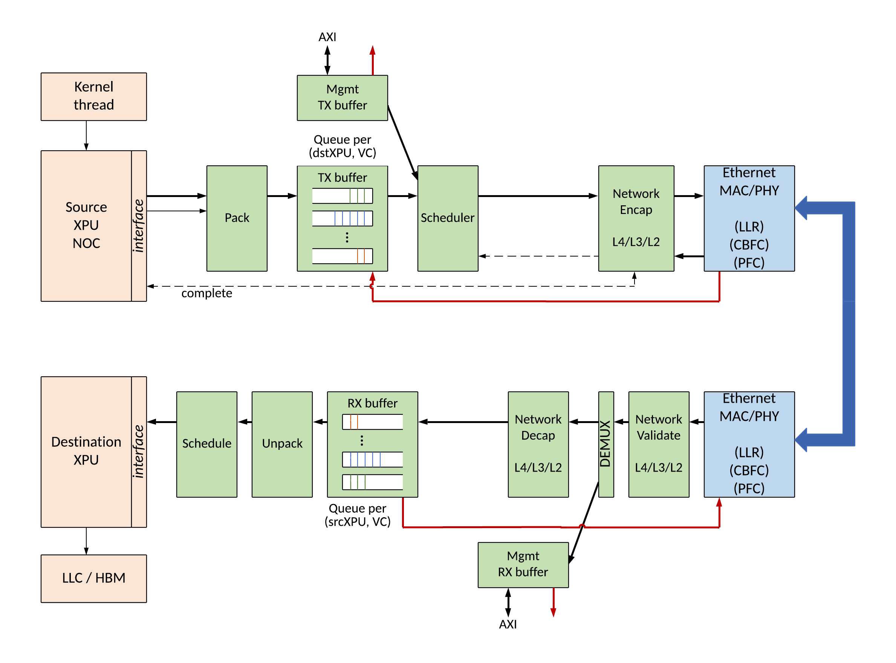
图 19 SUE Lite 处理流程（原文 Figure 19）
方块布局与图 18 几乎一样，便于对照。发送路径在调度器之后直接进入网络封装，接收路径在 DEMUX 之后直接进入网络解封装。两处都没有“可靠性 / PSN / NACK”方块。
默认一颗 XPU 会连接多个 SUE 实例。跨实例的负载均衡可以由软件做，也可以在 XPU 里放一个硬件块，把操作分到各个 SUE 模块。每个 SUE 实例会向外提供拥塞状态，供这个硬件块使用，见图 20。
在一个 SUE 实例内部，只要端口不少于两个，就可以打开负载均衡。这时 SUE 按可用带宽，把每一组打包后的操作动态分到某个端口。这种跨端口均衡只在无序模式下进行，顺序不再保持。
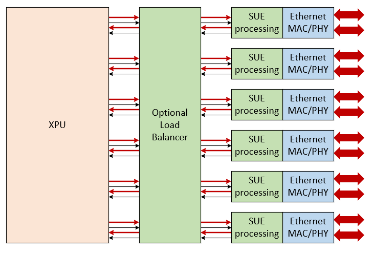
图 20 XPU 负载均衡示例（原文 Figure 20）
从左到右是一颗 XPU、一块可选的负载均衡器，以及上下排开的多个 SUE 实例。图中画了 6 个，表示“多个”，不是规定必须为 6。每个实例右边再接自己的以太网 MAC/PHY，并用红色双向箭头接到片外。
XPU 到 SUE 的接口比 SUE 到以太网的接口更快，而且多条 VC 上都有流控，避免写爆 SUE 里的缓冲。这个速率差会让事务在按目的地分开的队列里积起来。面向以太网的调度器依次查看这些队列，找下一批要发的事务。一个队列里若有多条事务，就打进同一个外出以太网帧；若只有一条，就单独发送。SUE 不会为了凑包而故意推迟事务。它最多打到预先配置的上限，例如 2 KB，然后就发出，再转到下一个有资格的队列。
图 21 里，XPU 把事务 A 到 E 交给 SUE，SUE 按目的地入队。调度器是工作守恒的，总是发送下一个有数据的队列。这个例子里，下一个队列里是 A，发出 A；然后是 B，发出 B；然后选中放着 C 的队列，而 E 也排到了同一目的地，于是 C 和 E 打进同一帧发出；最后选中 D 的队列并发出。SUE 不等队列堆到某个长度，只是在已经堆在一起时顺便打包，既提高线上效率，也不增加事务时延。
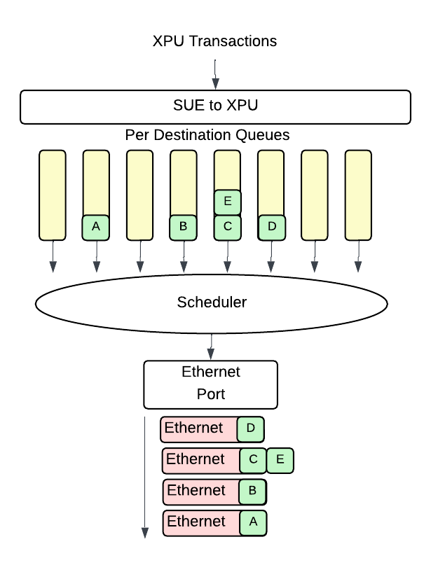
图 21 SUE 打包示例（原文 Figure 21）
自上而下是入队，再经过调度器，从以太网口出去。出口处的帧沿向下的箭头排列，靠近箭头、位于最下方的是最先发出的帧。
多 XPU 共享内存系统的吞吐取决于 XPU 通信的时延，所以把互连时延做低非常重要。线缆的长度和种类、交换机时延都是关键项。各部件的时延见图 22。
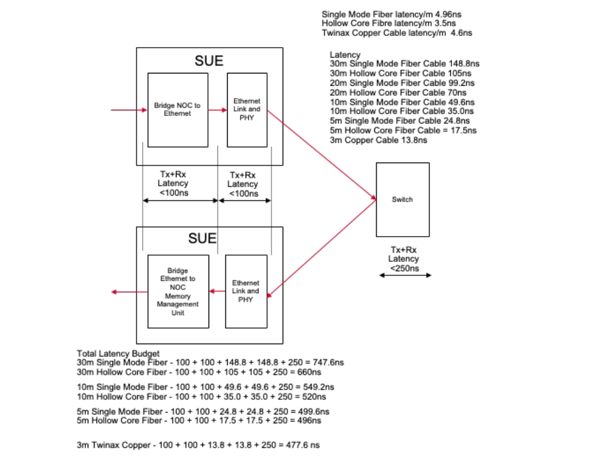
图 22 SUE 端到端单向时延预算（原文 Figure 22，裁自原页以便保留图中的数字）
左边两块叠放的 SUE 代表路径的两端，右边是一台交换机。红色箭头从上面那颗 XPU 的 SUE 出发，进交换机，再进下面那颗 XPU 的 SUE。这是单向，不是往返。每块 SUE 内部有两个方框，各自标着发送加接收时延小于 100 ns：
图中给出的单向合计是：两端桥接 100+100 ns，两段线缆，再加交换机 250 ns。
| 介质与长度 | 单段线缆 | 单向合计 |
|---|---|---|
| 30 m 单模光纤 | 148.8 ns | 100+100+148.8+148.8+250 = 747.6 ns |
| 30 m 空芯光纤 | 105 ns | 660 ns |
| 10 m 单模光纤 | 49.6 ns | 549.2 ns |
| 10 m 空芯光纤 | 35.0 ns | 520 ns |
| 5 m 单模光纤 | 24.8 ns | 499.6 ns |
| 5 m 空芯光纤 | 17.5 ns | 496 ns |
| 3 m Twinax 铜缆 | 13.8 ns | 477.6 ns |
表 1 的目标是往返小于 2 μs。按图中最大的 30 m 单模估算，单向约 0.75 μs，往返约 1.5 μs，仍留在 2 μs 以内。3 m 铜缆单向不到 0.5 μs。预算没有把 XPU 内核对命令的处理、打包等待和重传算进去，只覆盖桥、PHY、线缆和交换机。
原文说明：附录没有规范约束力，只供参考。核对表要求贡献者逐项填写，并链到本规范或外部文档中的详细说明。1.0.0 文本里实际填写的内容如下。
| 项目 | 状态或细节 |
|---|---|
| 是否已录入 OCP 贡献门户 | 原文为“是或否”的模板，未填具体答案 |
| 是否已在 OCP 贡献门户获得批准 | 同上，未填具体答案 |
| 是否有供应商正在基于本规范做产品（供应商须为 OCP 解决方案提供商） | 是。Broadcom 向第三方 ASIC 设计方提供 IP |
| 供应商能否在 120 天内达到一般可获得（GA） | 否。开发一颗 ASIC 的时间长于 120 天 |